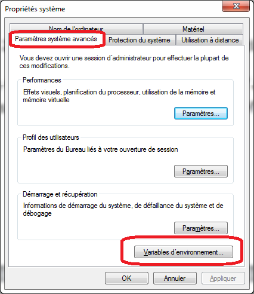
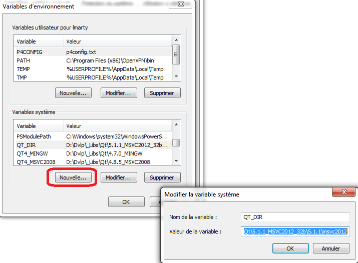
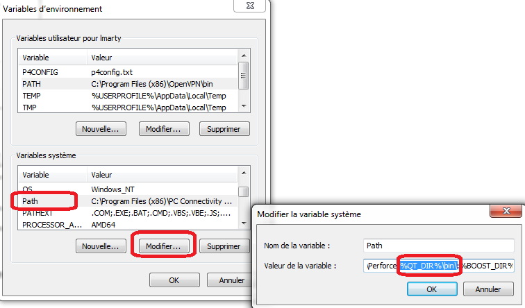
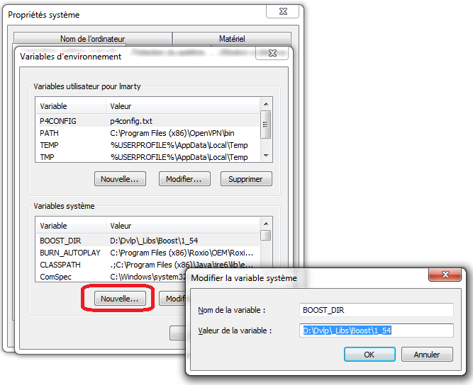
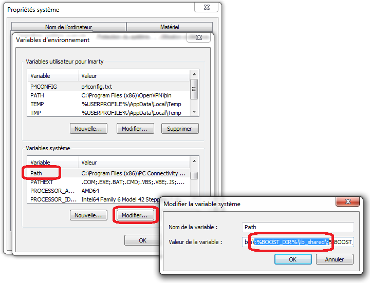
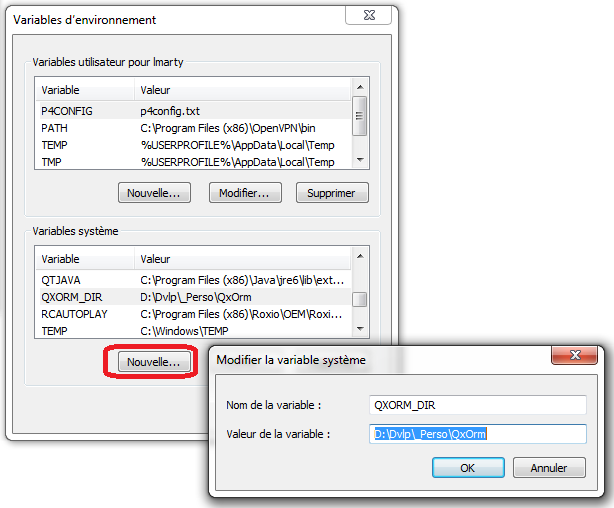
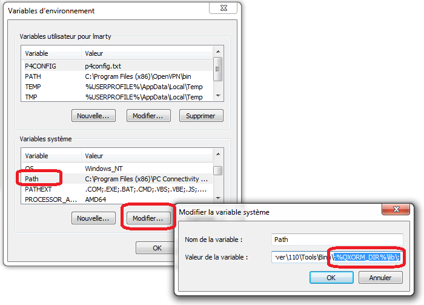
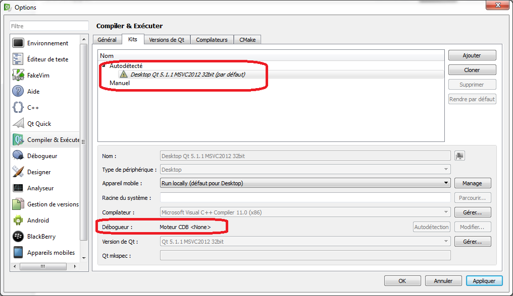
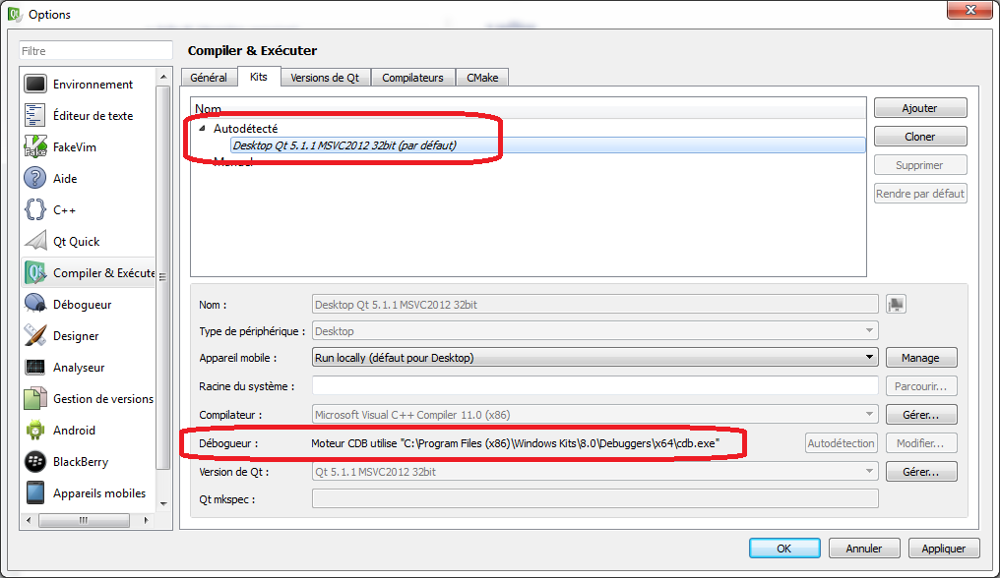

|
|
| Accueil | Téléchargement | Exemple rapide |
Tutoriel (4)
|
Manuel (2)
|
Forum | Nos clients |
| QxOrm >> Tutoriel >> Installer un environnement de développement avec QxOrm sous Windows |
|
1- Télécharger et installer Qt (Qt4 ou Qt5) Télécharger Qt à l'adresse suivante : http://www.qt.io/download/ Par exemple : Ensuite, exécutez le fichier téléchargé et suivez les instructions du programme d'installation de Qt. 2- Ajouter le dossier « bin » de Qt dans le « PATH » de Windows Une fois Qt installé, il est recommandé d'ajouter le dossier « bin » du répertoire d'installation de Qt dans la variable d'environnement « PATH » de Windows. Allez dans les « Paramètres système avancés » de Windows, puis cliquez sur le bouton « Variables d'environnements » :  Ajouter une variable système nommée « QT_DIR » :
 Modifier la variable système « PATH » pour ajouter la valeur suivante : « ;%QT_DIR%\bin\; »  A présent, Qt est disponible sur votre environnement de développement. Il est possible de tester l'installation en ouvrant une fenêtre DOS (menu « Démarrer », « Exécuter » puis « cmd »), puis en lançant la commande : « qmake -version » : 
Remarque : pourquoi avoir ajouté Qt dans le PATH de Windows ? Tous les exécutables nécessaires pour le fonctionnement de Qt (qmake, moc, ui, rcc, etc.) sont accessibles dans le système sans avoir à paramétrer autre chose. De plus, il sera très facile de basculer d'une version de Qt à une autre : il suffit tout simplement de modifier la valeur de « QT_DIR » pour indiquer un autre répertoire d'installation de Qt. 3- Installer la bibliothèque boost Remarque : par défaut, la bibliothèque QxOrm dépend uniquement des en-têtes *.hpp de boost : la dépendance au module boost serialization est optionnelle et non requise avec la configuration par défaut. Certaines étapes de ce tutoriel sur l'installation de boost sont donc optionnelles. Le plus simple et le plus rapide est de télécharger le package boost fourni sur le site QxOrm. Le package boost le plus récent est disponible à cette adresse : http://www.qxorm.com/lib/boost_1_57.zip 
Ce package contient tous les fichiers en-têtes (*.hpp) de boost (dans le dossier « include »), et le module « boost::serialization » compilé pour les environnements suivants (dans le dossier « lib_shared » en mode 32 bits et « lib_shared_64b » en mode 64 bits) :
4- Ajouter le dossier « lib_shared » du package boost dans le « PATH » de Windows (optionnel) Remarque : cette étape est optionnelle et non requise avec la configuration par défaut : si vous ne souhaitez pas travailler avec les fonctionnalités proposées par le module boost serialization, alors vous pouvez aller directement à l'étape suivante de ce tutoriel. Allez dans les « Paramètres système avancés » de Windows, puis cliquez sur le bouton « Variables d'environnements » : Ajouter une variable système nommée « BOOST_DIR » :
 Modifier la variable système « PATH » pour ajouter la valeur suivante : « ;%BOOST_DIR%\lib_shared\; »  Remarque : il est également possible d'ajouter le répertoire « lib_shared_64b » dans le PATH de Windows si l'on souhaite développer en mode 64 bits : « ;%BOOST_DIR%\lib_shared_64b\; ». 5- Télécharger et installer la bibliothèque QxOrm La dernière version de la bibliothèque QxOrm est disponible à cette adresse : http://www.qxorm.com/qxorm_fr/download.html Une fois téléchargée, veuillez décompresser le fichier dans le dossier de votre choix. 6- Paramétrer le fichier « QxOrm.pri » Il est nécessaire d'indiquer à la bibliothèque QxOrm comment accéder à boost en modifiant le fichier « QxOrm.pri » (attention, seul le fichier « QxOrm.pri » peut être modifié, les autres fichiers du package QxOrm ne doivent pas être modifiés). Ouvrez le fichier « QxOrm.pri » avec un éditeur de texte (notepad ou notepad++ par exemple), puis modifier les valeurs des paramètres :
Remarque : Le fichier « QxOrm.pri » est un fichier de configuration de la bibliothèque QxOrm. Ce fichier devra être inclus dans tous les fichiers projets dépendants de QxOrm en ajoutant la ligne suivante dans le fichier *.pro du projet : include(my_path_to_QxOrm_library/QxOrm.pri) 7- Ajouter QxOrm dans le « PATH » de Windows Tout comme pour les variables « QT_DIR » et « BOOST_DIR », nous allons ajouter une variable d'environnement nommée « QXORM_DIR ». Allez dans les « Paramètres système avancés » de Windows, puis cliquez sur le bouton « Variables d'environnements » : Ajouter une variable système nommée « QXORM_DIR » :
 Modifier la variable système « PATH » pour ajouter la valeur suivante : « ;%QXORM_DIR%\lib\; »  8- Tester l'installation avec le projet de test « qxBlog » Pour tester rapidement l'installation, il est possible d'ouvrir le projet de test « qxBlog » du package QxOrm : ouvrir le fichier « ./test/qxBlog/qxBlog.sln » avec l'éditeur MSVC++ 2012, puis compiler et exécuter le projet. Si l'exécution du projet se passe sans erreur et sans assert, alors votre environnement de développement est prêt : Qt, boost et QxOrm sont correctement installés ! 9- Tester tous les projets de test du package QxOrm avec MSVC++ 2012 Il est possible de tester tous les projets de test du package QxOrm, chaque projet ayant un fichier « *.sln » et peut donc être utilisé par MSVC++ : chaque projet de test doit se compiler et s'exécuter sans aucune erreur. Remarque : Qt fournit un Add-in pour les EDI Microsoft Visual C++, il est donc possible de les installer pour faciliter l'intégration de Qt (gestion automatique des fichiers projets *.pro par exemple). Pour télécharger cet Add-in, rendez-vous sur la page de téléchargement de Qt : http://www.qt.io/download/ 
10- Tester QxOrm avec l'EDI QtCreator Pour ceux qui préfèrent utiliser QtCreator à la place de MSVC++ : lancer QtCreator présent dans le dossier d'installation de Qt « .\Tools\QtCreator\bin\qtcreator.exe ». Ouvrir le menu « Outils >> Options », puis aller dans la section « Compiler & Exécuter », onglet « Kits », pour vérifier que c'est bien le compilateur de MSVC++ 2012 qui sera utilisé à la compilation dans QtCreator :  Si par défaut, vous n'avez pas de débogueur paramétré comme sur la copie d'écran ci-dessus, veuillez installer « Debugging Tools for Windows SDK » disponible sur le site de Microsoft (http://msdn.microsoft.com/en-us/windows/hardware/hh852363.aspx). Ensuite, relancez QtCreator et vous devriez avoir à présent :  Remarque : vous trouverez plus d'informations sur le paramétrage du débogeur dans QtCreator sur le site de Qt : http://qt-project.org/wiki/Qt_Creator_Windows_Debugging A présent, vous pouvez utiliser QtCreator ou MSVC++ 2012, au choix ! |
|
|
© 2017 Lionel Marty - contact@qxorm.com |